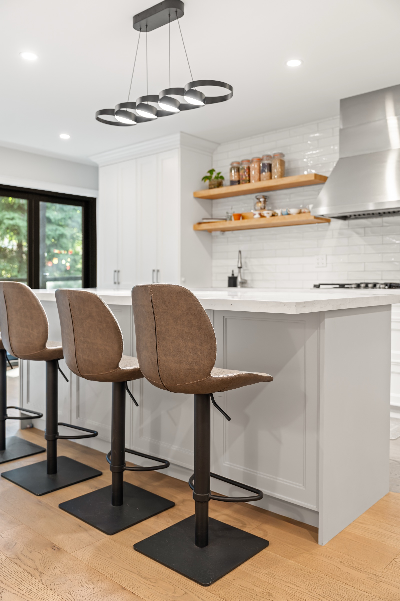
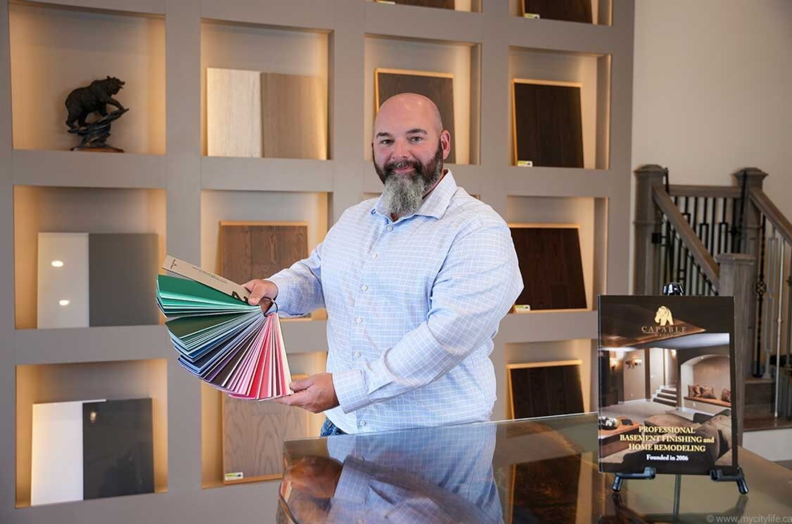

Mariani Kitchen Studio · Toronto & GTA
Custom kitchens for Toronto and the GTA, designed, made, and installed by one team.
A beautiful kitchen still has to work beautifully. Backed by Capable Group's 25+ years in business, Mariani plans the room to feel natural to move through, generous in storage, and considered in every surface you see and touch.
The room at the centre of the home
A beautiful kitchen should make the whole home easier to live in.
The day changes around the kitchen. It begins quietly, fills with cooking and conversation, and often becomes the place where everyone stays longer than planned. A well-designed room lets that happen without feeling crowded or improvised.
Explore kitchen inspiration
Mariani is where Capable Group brings its renovation experience into one dedicated kitchen studio.
Here, the room is designed as a whole, then kept connected to the people who make, install, and—when included in the scope—renovate the space around it.
A clear scope from the start
You do not need to know where cabinetry ends and the rest of the renovation begins.
Some kitchens can be transformed inside the room you already have. Others only work when the floor, lighting, walls, plumbing, electrical, or adjoining space changes with them. We work out what the room actually needs, then put the cabinetry, installation, and any agreed renovation into one clear scope before drawings and pricing are fixed.

A new roomCustom KitchensA complete new kitchen, developed from the room and layout through cabinetry, materials, and installation.See custom kitchens ↗ Beyond cabinetryKitchen RenovationsFor kitchens that only work when the room, services, finishes, or adjoining space changes with them.See kitchen renovations ↗
Beyond cabinetryKitchen RenovationsFor kitchens that only work when the room, services, finishes, or adjoining space changes with them.See kitchen renovations ↗
 Condo-specific planningCondo KitchensA custom kitchen planned around compact dimensions, building conditions, delivery, and installation access.See condo kitchens ↗
Condo-specific planningCondo KitchensA custom kitchen planned around compact dimensions, building conditions, delivery, and installation access.See condo kitchens ↗
 A settled roomCustom CabinetryMade-to-fit cabinetry when the surrounding room and renovation are already settled.See custom cabinetry ↗
A settled roomCustom CabinetryMade-to-fit cabinetry when the surrounding room and renovation are already settled.See custom cabinetry ↗
Smart value, clearly explained
Put the budget where you will see and use the difference.
Custom should not mean paying for complexity everywhere. We give the most attention to the layout, storage, work surfaces, hardware, and junctions you will use or see every day. Where a simpler choice does the same job without weakening the room, we will say so. A clear scope then lets you compare what each quote actually includes—not only the total at the bottom.
Understand kitchen cost & scopeSpend more on what you use every day.
Compare what each quote includes, not just its total.
Materials & Technology
Choose materials for the room they create and the work they have to do.
A sample can look beautiful on a table and still be wrong beside your floor, under your light, or in the way you cook and clean. Mariani compares fronts, worktops, openings, hardware, and cabinet interiors as one working kitchen—how they meet, how they move, what care they ask of you, and whether the storage puts the right things within reach. Once those choices work together, the approved combination is recorded for the people who will make the cabinetry.

Yan Margulis · Founder & Owner, Capable Group
One accountable operation
The plan you approve should be the kitchen that gets made and fitted.
Mariani connects the drawings, material choices, custom production, checks, installation, and any agreed surrounding renovation inside one operation. That continuity reduces reinterpretation at the handoffs where dimensions, alignments, and scope can otherwise drift.
Capable Group has been in business for 25+ years, has completed 2,000+ projects, and currently holds a 4.9/5 rating from 84 HomeStars reviews.
Capable Group · 25+ years in business2,000+ Capable Group projects completedCapable Group · 4.9/5 from 84 HomeStars reviewsOne approved plan through design, production, and installation
Kitchen inspiration
Find the kitchen you want to live with.
Look for the rooms you keep returning to. Notice the cabinet line, colour, material, or proportion that makes them work. Open any image and carry one or two references into the conversation; Mariani will help translate what you like into a kitchen that belongs in your home.
Begin with a conversation
Tell us what is not working now—and what you want the room to become.
Tell us what feels awkward, what you wish the room made easier, and which kitchen above stayed with you. We will help define what needs to change, what can stay, and what the sensible next step is. A few photographs are useful; a finished brief is not required.